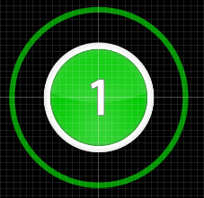
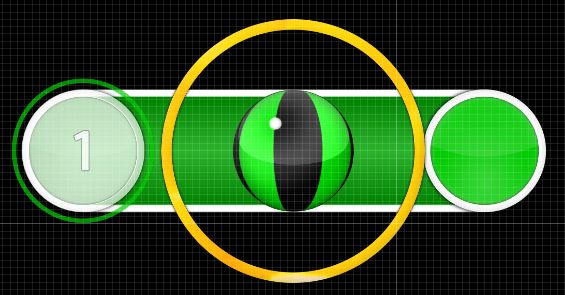

Elementos do jogo
Círculo
Círculos são o elemento mais comum do jogo.
Para conseguir a pontuação máxima,
é necessário clicar no círculo no momento que o anel
que o envolve toca na borda do círculo.

Slider
Para completar um slider corretamente
é necessário clicar no círculo em seu início
e segurar o clique até que ele chegue no final.
Durante esse período o cursor deve permanecer
na vizinhança da slider ball.
